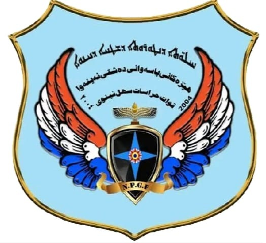
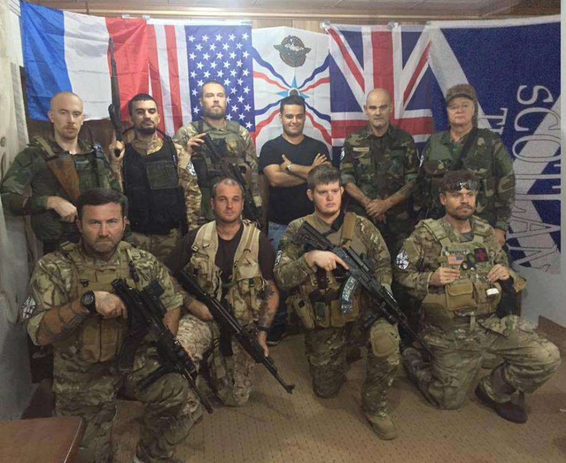

We exist to bring together Assyrians who are serving and who have served armed forces worldwide. Our Assyrian ancestors were among the first to form a fully professional standing army, and being of such heritage, we Assyrians have no right to a dishonourable action. By honouring the legacy of our Assyrian military history, from past to present, from Tiglath-Pileser III to Agha Petros, we honour ourselves and forge a community of militant zeal that is willing to serve one another as family, and serve our Assyrians as patriots. The Assyrian Military Association is proud to currently have members affiliated with the Nineveh Plain Guard Forces, the British Armed Forces, the Canadian Army, the Australian Defense Force and French Armed Forces. We welcome you to join our community and grow close to your Assyrian brothers in arms, not just for the interests of ourselves, but for the interests of our greater Assyria.

EMAIL:
info@assyrianmilitaryassociation.org
TELEGRAM:
t.me/AssyrianMilitaryAssociation
FACEBOOK:
www.facebook.com/AssyrianMilitaryAssociation/
